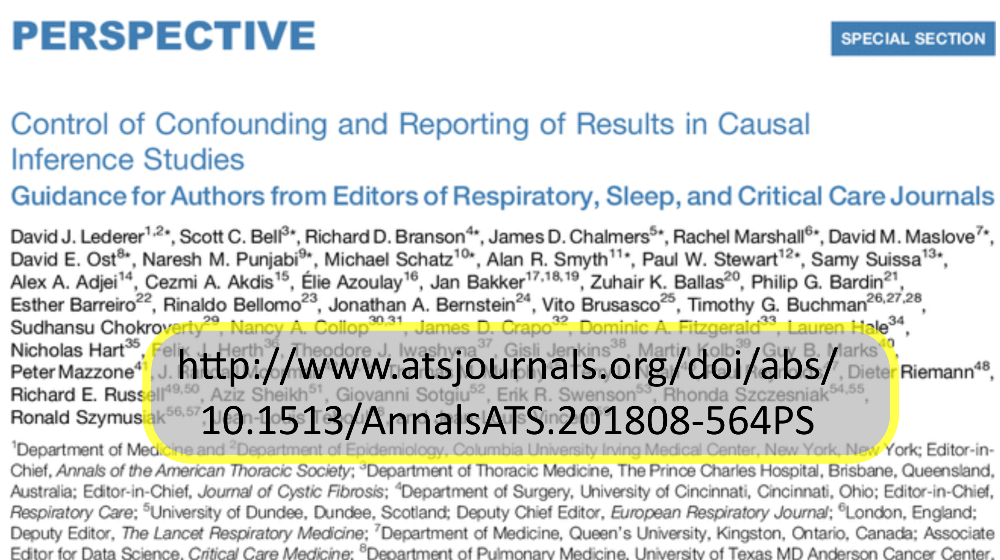

Judea Pearl se ha aproximado a la causalidad desde una peerspectiva matemática y computacional. En ese camino retomó y dio un nuevo impulso a los llamados modelos probabilísticos gráficos en su variante de redes Bayesianas. También ha incursionado en los llamados modelos de ecuaciones estructuradas, también de la familia de los modelos gráficos. Todo ello vinculado con los Gráfos Acíclicos Dirigidos, a los que llamaremos DAG (del inglés directed acyclic graphs). Pearl y colaboradores así como otros investigadores ahora, han venido desarrollando la teoría que nos permite analizar tales DAGs para comprender los patrones de dependencia causal así como los de correlación que implica una proposición causal dada. En esta contribución buscamos mostrarles algunos elementos interesantes de esto y con ello, animarlos a estudiar estas ideas con mayor profundidad.
Los DAG y modelos estadísticos
\(\newcommand{\ci}{\perp\!\!\!\perp\!\!\!~~~}\)
Lübkea K, et. al (2020). nos ofrecen el artículo Why We Should Teach Causal Inference: Examples in Linear Regression With Simulated Data. La propuesta es atractiva y vamos a ensayar hacerlo. Esta publicación, dicen los propios autores, surge de que desde hace ya algunos años se ha venido señalando la importancia de propiciar la integración de la inferencia causal (DAGs y similares) en los cursos introductorios de estadística. Judea Pearl llama a este enfoque la “revolución causal”. Con su obra El libro del Porqué ha logrado incrementar el interés en hacer esta fusión en la enseñanza de la estadística.
La influencia de este modo de pensar es tal que está provocando incluso que algunas revistas se interesen en generar guias de uso de estas ideas, por ejemplo: Control of Confounding and Reporting of Results 1n Causal Inference Studies Guidance for Authors…. En gran parte, la tradición de experimentos aleatorizados ofrece una sólida herramienta para estudiar relaciones causales. El problema, es que hay muchas disciplinas y más situaciones, en donde el enfoque de experimentos aleatorizados es inviable.
El hecho es que los datos observacionales son una proporción abrumadora de la materia prima para la investigación empírica. Por lo tanto es necesario que, además de adquirir las destrezas que los experimentos aleatorizado requieren, también deben aprender a pensar en una forma más amplia acerca del proceso a través del cual se generan los datos. Esto es indispensable para fortalecer habilidades críticas necesarias para estar en posibilidad de extraer conclusiones adecuadas a partir de ellos.
Un tema importante es comprender que en la inferencia causal, además de la habilidad para observar y operar con los datos, la evaluación contrafáctica es necesaria para lograr una comprensión más profunda de lo que se puede y quizás aún más importante, lo que no se puede deducir del análisis de un conjunto de datos.
En la siguiente sección vamos a seguir este camino con uno de los ejemplos que nos proponen Lübkea K, et. al (2020).
Vivimos en un mundo pleno de datos observacionales multivariados. Se trata de datos en lo que también abundan los procesos que pueden generar confusión (en el sentido estadístico, además del cognitivo), y se tiene importantes dificultades para llegar a conclusiones.
Ejemplo: Efectos de sesgo en las causas
El primer ejemplo de simulación que haremos parte de la proposición causal:
El aprendizaje (X) tiene como efecto el conocimiento (C), y conocer provoca la comprensión (Y),
Además actúan algunos factores exógenos (U, son el término de error en el modelo estadístico). En la vida real, el aprendizaje, el conocimiento y la comprensión pueden ser operacionalizados por algún cuestionario y estandarizados para dar la precisión necesaria al análisis.
El ejemplo consiste ahora en producir un conjunto de datos que cumpla, por diseño, con la descripción que acabo de hacer. En este caso utilizaremos las ecuaciones siguientes.
\[
\begin{align}
X &= U_{X}, \, U_{X} \sim N(0, 1) \\
C &= 5 X + U_{C}, \, U_{C} \sim N(0, 1) \\
Y &= 3 C + U_{Y}, \, U_{Y} \sim N(0, 1)
\end{align}
\]
en donde N(μ, σ) indica que existen variaciones por causas no observadas que vamos a suponer generan oscilaciones aleatorias o un ruido, cuya distribución es semejante a la que produciría una distribución Normal de probabilidades. Ahora escribimos estas ecuaciones en un escript de R.
Código
set.seed(1896) # Si interesa repetir la misma secuencia de numeros aleatorios. Habilita Repetibilidadn <-1000# Sample Sizeaprender <-rnorm(n)conocer <-5* aprender +rnorm(n) # Conocer depende del comportamiento de aprenderentender <-3* conocer +rnorm(n) # entender depende del comportamiento de conocer# Para comodidad de cálculo junto los datos en una tabla, un "data.frame"datos <-data.frame(aprender, conocer, entender)
El DAG que describe la situación descrita lo podemos producir en R con ayuda de la biblioteca DAGitty. Con las instrucciones siguentes.
Si optamos por no “corregir” la estimación por el efecto del mediador, Supondríamos que el efecto total del aprendizaje sobre el entendimiento no tiene sesgo. La estimación de esta relación la obtenemos con el modelo que calculamos en ejemplo_1_ecuación_1.
¿Qué piensas de este resultado? ¿El modelo es congruente con la proposición causal? Si ahora optamos por sí “corregir” los efectos considerando que el conocimiento puede estar interfiriendo la estimación del efecto total del aprendizaje sobre el entendimiento. Ahora, el modelo que da cuenta de esta nueva situación es el que calculamos en ejemplo_1_ecuación_2.
¿Qué relación tiene esto con lo que cabría esperar de acuerdo con as reglas de la “separación direccional”?
¿Qué sugieren los datos del ajuste del modelo estadístico lm?
¿Tienen relevancia el aprendizaje y el conocimiento?
¿Cuál es el modelo adecuado dada la proposición causal considerada?
Podemos utilizar a dagitty para explorar el DAG directamente de la siguiente manera. Podemos preguntarnos cuales serían las formas de separar el grafo con criterios de independencia condicional. Se trata de aplicar las tres reglas de separación direccional al grafo. Afortunadamente dagitty lo puede hacer por nosotros.
Además de hacer esto por nosotros, la biblioteca dagitty nos permite poner a prueba la correspondencia de los datos con estas ideas. Lo hacemos con la función localTests.
La función localTests calcula el coeficiente de correlación de Pearson para cada condición considerada. El resultado incluye el valor p y el intervalo de confianza del coeficiente de correlación para cada una de las relaciones de independencias condicionales implicadas por la estructura del modelo.
El coeficiente de correlación de Pearson varía entre -1 y 1. El valor 0 implica que no hay correlación, mientras que -1 o 1 implica una correlación lineal perfecta.
El valor p de la prueba indica la probabilidad de obtener un conjunto de datos como el que se tiene, asumiendo la hipótesis de que la condición de independencia correspondiente es verdadera.
Por lo tanto, un coeficiente de correlación cercano a 0 con un valor p alto es sugerente de que la independencia condicional indicada es congruente con el patrón detectable en los datos.
Por el contrario, un valor alto del coeficiente de correlación con un valor p bajo sugiere que la independencia condicional considerada no es congruente con el conjunto de datos.
Las columnas etiquetadas com 2.5% y 97,5% contienen el intervalo de confianza del 95% para el coeficiente de correlación.
Cuanto más estrecho sea el intervalo de confianza y alejado de cero resulte, más fuerte será la evidencia de que la independencia condicional que implica el DAG no se mantiene en el conjunto de datos disponible para el ensayo.
Código
# El tipo de análisis "cis" usa regresión lineal para poner a prueba la correlaciónejemplo_1_analisis_DAG <-localTests(x=ejemplo_1_DAG, data=datos, type="cis") print(ejemplo_1_analisis_DAG)
Si lo preferimos, podemos obtener una representación gráfica de estos resultados.
Código
options(repr.plot.width=14, repr.plot.height=5)par(cex=1.5, lwd =3, oma =c(1,2,1,1), mar = (c(4,2,1,1) +0.5))plotLocalTestResults(ejemplo_1_analisis_DAG, col ="blue")
¿Puedes comentar tu interpretación de estos resultados del modelo y los datos sobre aprendizaje y conocimiento?

:format(.JPG)/f.elconfidencial.com/original/576/350/da1/576350da1a73890bf7e9710e9f63c5fe.jpg)